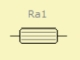

Resistance (Acoustic)
| Home | LE-Part | Acoustic |
 |
Parameters
| Caption | String | Name of component |
| Formula | String | Formula of parameters |
| Ra | Pa·s/m3 | Acoustic mass |
This two-pole component installs an acoustic resistance in the network where the volume-velocity vibrates in phase with the sound pressure. The main causes for losses are viscosity and thermal exchange at the boundaries. For example:
- fine wire or textile meshes
- porous acoustic material
- narrow ducts and slits
- obstructions and bends in waveguides
The acoustic impedance is
Za = Ra
Formula
The name of the parameters are equal to the formula-identifiers:
|
Examples
Viscosity and Thermal Exchange [15]
 In many cases the resistance is caused by viscosity where adjacent layers of
gas molecules with different velocity are rubbing against one another.
Directly at the walls, the molecules are at rest with the wall. Maximum movement
occurs in the center. In between molecule-layers are moving differently and causing
friction, which is greatest close to the walls and decreases rapidly towards the
center.
In many cases the resistance is caused by viscosity where adjacent layers of
gas molecules with different velocity are rubbing against one another.
Directly at the walls, the molecules are at rest with the wall. Maximum movement
occurs in the center. In between molecule-layers are moving differently and causing
friction, which is greatest close to the walls and decreases rapidly towards the
center.
The above scenario yields viscosity and thermal exchange. Approximately, the frequency dependency of the resistance increases with Ra ∝ √f:

with
ρ Density [ρ] = kg/m3 |
c Sound velocity [c] = m/s |
L Length of duct [L] = m |
D Perimeter of cross-section [D] = m |
S Area of cross-section [S] = m2 |
k = ω/c Wave-number [k] = 1/m |
γ Ratio of specific heat γ = cp/cv (γ=1.402 with air T = 20°C, p0 = 101.325 kPa)
cp, cv Specific heat-capacity at constant pressure/volume [cp], [cv] = J/(kg·K)
dv Viscosity boundary layer dv = √(2·η/(ρ·ω)), [dv] = m, dv = 2.2·10-6/√f (air @ T = 20°C)
η dyn. viscosity [η] = Pa·s, η = 18.2·10-6 Pa·s (air @ T = 20°C)
dh Thermal boundary layer dh = √(2·K/(ρ·ω·cp)), [dh] = m
K thermal conductivity [K] = W/(m·K), because K ≈ 5/3·η·cv, dh = √(10·η/(3·γ·ρ·ω)), dh = 2.4·10-6/√f (air @ T = 20° C).
Because the thickness of the boundary layers of viscosity and of thermal exchange are often similar, the formula of viscosity for the resistance may be simplified to:

Whenever the space in which the sound-wave propagates is in the range or even smaller than 2·dv, the acoustic resistance will increase dramatically. As can be seen in the formula of dv, the thickness of the viscosity layer decreases with frequency.
If the wave-guide is curved the effect is similar. In this case, too, local air-layers of different motion increase the acoustic resistance due to friction.
Acoustic Resistance of Meshes [16]
| Number of Wires per Inch | Mesh-Wire Diameter | Specific Acoustic Resistance |
| [d] = mm | [Rs] = Pa·s/m | |
| 30 | 0.33 | 5.67 |
| 50 | 0.22 | 5.88 |
| 100 | 0.115 | 9.1 |
| 120 | 0.092 | 13.5 |
| 200 | 0.057 | 24.6 |
The specific resistance Rs has to be divided by the effective area S, in order to obtain the acoustic resistance: Ra = Rs/S.
For example, the wire-mesh, which may cover the tunnel of a vented loudspeaker cabinet provides an acoustic resistance. For a mesh-density of 120 wires per inch and 0.092 mm gauge the table above gives a specific resistance of Rs = 13.5 Pa·s/m. The vent diameter shall be dD = 100mm then the cross-sectional area is: SD = π·dD2/4. The acoustic resistance is:
Ra = Rs/SD = 13.5 Pa·s/m /0.00785 m2 = 1719 Pa·s/m3
On the other hand, the acoustic resistance due to the viscosity in this vent is approximately Ra = 120Pa·s/m3 (assuming a length of L = 200 mm and a frequency of 100Hz).
Thus the resistance of the wire-mesh is more than ten times higher than the resistance caused by viscosity inside the tunnel.
Acoustic Resistance of Capillary Ducts [16]
In the frequency range in which the radius of the capillary is smaller than R < 0.002/√f, the acoustic impedance is approximately:

with
L length of the capillary [L] = m, R radius of the capillary [R] = m. Ma is the acoustic mass with [Ma] = kg/m4. The real component of Za is the acoustic resistance Ra with [Ra] = Pa·s/m3
Acoustic Resistance of a Thin Slit [16]
For the frequency range in which the height of the slit is less than H < 0.003/√f, the acoustic impedance is:

with
L is the depth of slit [L] = m, W is the width, H is the height with H << W.
The real component of Za is the acoustic resistance Ra with [Ra] = Pa·s/m3